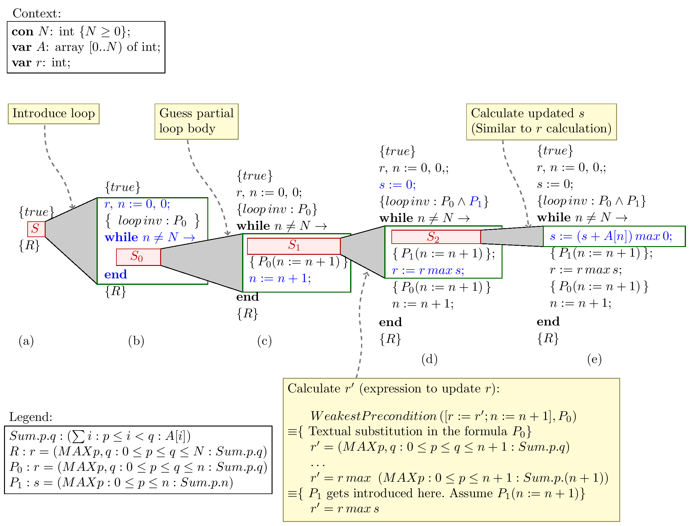

CAPS is a system for the derivation of imperative programs from formal specifications. The system provides a tactic based framework for carrying out program as well as formula transformations in a coherent way. It automates the mundane formula manipulation tasks by employing automated theorem provers.
While developing program in CAPS, at every stage, there is always a correct-by-construction partial program with some unknown subprograms, as shown in the example in Figure 1.

Figure 1: Sketch of an example derivation (maximum segment sum problem)
All program constructs in the system, including the unknown subprograms have associated pre- and post-conditions. Program constructs are introduced only when logical manipulations show them to be sufficient for maintaining the correctness. For example, in Figure 1(c), variable needs to be modified in the loop body to maintain the loop invariant . The required update for naturally follows from the simplification of the correctness proof obligations. An important feature of our system is that a user cannot construct an incorrect program in it. Apart from the fully annotated derived program, the system also maintains the derivation tree which reproduces the complete derivation process and provides opportunities for exploring the alternative solutions by backtracking and branching.
As a part of the Why3 installation, you will also need to install the external provers. Following external provers are supported.
At least one of these theorem provers needs to be installed. We recommend Z3 since CAPS can also connect to Z3 directly.
The following instructions should work. In case of problems, please refer detailed installation instructions at the Why3 homepage http://why3.lri.fr/.
sudo apt-get install ocaml ocaml-native-compilers
sudo apt-get install liblablgtk2-ocaml-dev liblablgtksourceview2-ocaml-dev libocamlgraph-ocaml-dev
wget https://gforge.inria.fr/frs/download.php/file/33491/why3-0.81.tar.gz
tar -xzf why3-0.81.tar.gz
cd why3-0.81/
./configure
wget https://gforge.inria.fr/frs/download.php/file/35214/why3-0.86.2.tar.gz
tar -xzf why3-0.86.2.tar.gz
cd why3-0.86.2/
./configure
Make sure that the "configure" is successful. Sample configure summary below
Summary
-----------------------------------------
Verbose make : no
OCaml compiler : yes
Version : 3.12.1
Library path : /usr/lib/ocaml
Native compilation : yes
Profiling : no
IDE : yes
Bench tool : no
Documentation : no
Coq support : no (coqc not found)
PVS support : no (pvs not found)
Frama-C support : no
Hypothesis selection : yes
Installable : yes
Binary path : ${exec_prefix}/bin
Data path : ${prefix}/share/why3
Relocatable : no
Proceed with the installation.
make
sudo make install
cd ..
wget http://github.com/Z3Prover/z3/archive/0b1e8ff91295ce70c6ffc2390f68b851f5bc1a6f.zip sudo apt-get install python autoconf unzip z3-0b1e8ff91295ce70c6ffc2390f68b851f5bc1a6f.zip cd z3-0b1e8ff91295ce70c6ffc2390f68b851f5bc1a6f python scripts/mk_make.py cd build make sudo make install
Run the following command to to detect freshly installed provers.
why3 config --detect-provers
Extract the archive. It contains the following files.
application.conf # Sample config file staged/ start # start script
Update the Why3 path and other variables in the application.conf file. Run the start command to start the server
chmod u+x ./start
./start -Dconfig.file=./application.conf
Connect to http://localhost:9000 to access the CAPS application GUI. Login with user name user1@company.com and passsword secret1.
(The videos are for the older version. The tactic names and parameters might not match.)
Start the derivation by applying the `Init4` tactic.
TODO
| Operator | Input command |
|---|---|
| Conjunction |
\and |
| Disjunction |
\or |
| Negation |
\neg |
| Equivalence |
\equiv |
| Implication |
\implies |
| Universal Quantifier |
\forall |
| Existential Quantifer |
\exists |
| Max Quantifer |
\Max |
| Min Quantifer |
\Min |
| Sum Quantifer |
\Sum |
| Prod Quantifer |
\Prod |
| Count Quantifer |
\Count |
| Opereator | Input Command |
|---|---|
| Addition | + |
| Subtraction | - |
| Multiplication | \ast |
| Division | \slash |